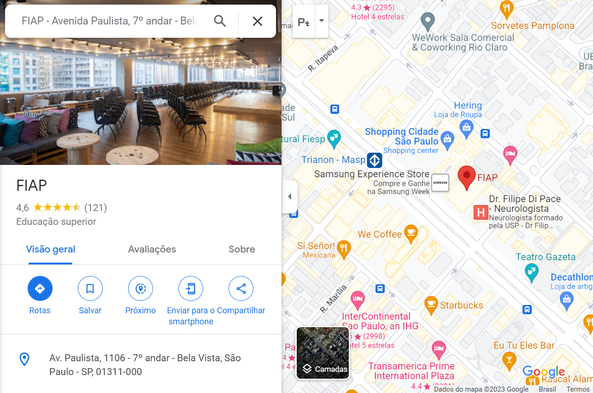

Endereço
Nosso endereço fica na Av. Paulista, 1106, 7º andar, Bela Vista, São Paulo - SP, CEP 01311-000.
A localização é privilegiada e de fácil acesso, próximo a estação de metrô Trianon-Masp e a diversas linhas de ônibus.
Horário de funcionamento
Estamos abertos de segunda a sexta-feira, das 9h às 18h.
Como chegar
Você pode chegar facilmente ao nosso endereço utilizando o transporte público. A estação de metrô Trianon-Masp fica a apenas 5 minutos de caminhada.
Além disso, há diversas linhas de ônibus que passam pela Avenida Paulista. Você pode consultar as opções de transporte público através do site da SPTrans.
Mapa
Aqui está o nosso endereço:
